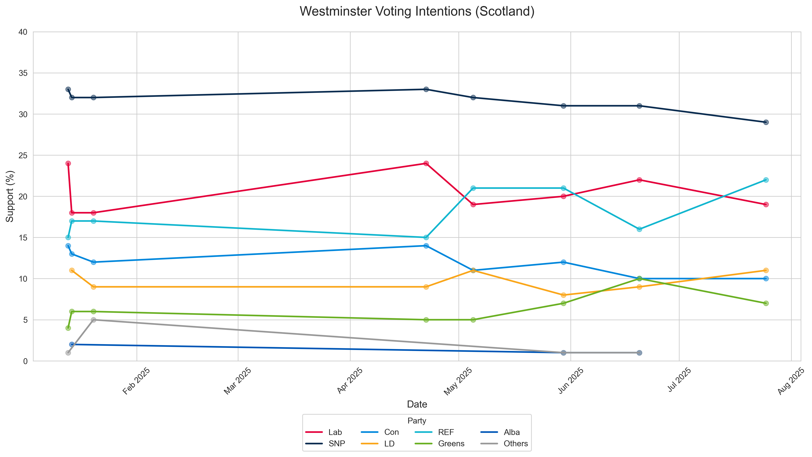
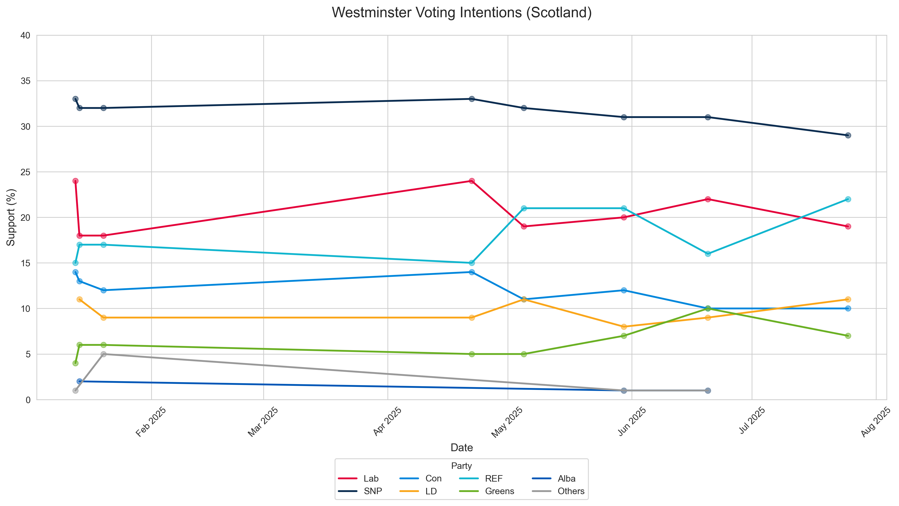

This project is no longer being maintained on these pages. Due to the size and complexity to which it grew as I added more features, I decided to turn it into a standalone website
You can visit www.pollcheck.co.uk to see the project in it's current form, as a public website giving polling and seat calculation information
UK Seat Calculator Results
About the Seat Calculator
This seat calculator uses Universal National Swing (UNS) methodology to predict UK election outcomes based on the latest polling data. The process involves:
1. Base Data: The calculator starts with the 2024 General Election results as its baseline, comprised of constituency-level vote shares for all major parties.
2. Poll Integration: The latest poll data is used to calculate national-level swings for each party compared to the 2024 election results. This includes support for Labour, Conservative, Reform UK, Liberal Democrats, Green Party, and Others.
3. Swing Application: The calculator employs a Universal National Swing (UNS) methodology, where the national-level swings calculated from polling data are applied uniformly across all constituencies. These swings are then applied to each constituency's 2024 results.
4. Scotland and Wales: As most polls are taken at the GB or UK level, they cannot be easily applied to these areas. The calculator does not apply any swings to these parties, and instead uses their GE2024 vote share. Ideally, later iterations will support regional calculations.
5. Seat Allocation: The calculator then determines the winner in each constituency based on the adjusted vote shares, using the First Past the Post system. This results in the final seat count for each party.
The Universal National Swing method offers the advantage of simplicity and transparency, making it easy to understand and verify, but it may not fully capture local variations in voting patterns and can sometimes overestimate the impact of national trends on individual constituencies.
UNS also does not take tactical voting into account
The results are updated automatically whenever a new poll becomes available, providing instant analysis on polling changes
Vote Share Swings from 2024 GE
| Party | 2024 GE Share | Latest Poll Share | Swing |
|---|
UK Polling Analysis
This project analyzes polling data from various pollsters across the UK, tracking support for different political parties over time.
This project uses only polls published on Wikipedia.
The Wikipedia table was imported into Excel and cleaned, with particular attention to date formats. For polls conducted over multiple days, the date was set to the final day to enable consistent plotting.
The plot uses LOESS smoothing to reduce noise while maintaining responsiveness to short-term trends. This approach helps identify underlying patterns in the polling data.
When multiple polls are released on the same day, they are averaged to create a single data point.
The Latest Polling Averages show the mean of all polls from the most recent date. For instance, if three polls are released on the same day, their results are averaged to provide a single representative figure.
The Average Support figures represent the mean of every individual poll in the dataset, regardless of when they were conducted. This provides a broader view of overall party support across the entire polling period.
 

Latest 10 Polls
| Date | Pollster | Sample Size | Lab | Con | Ref | LD | Greens | SNP | Others |
|---|